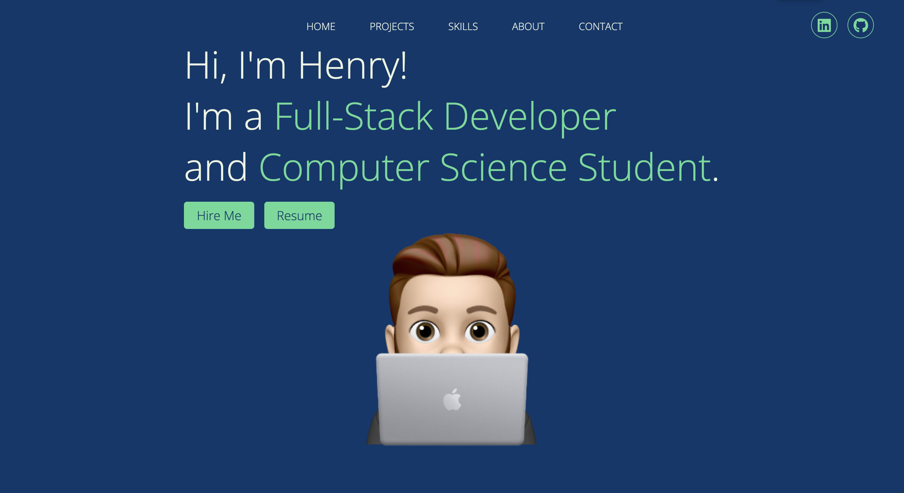
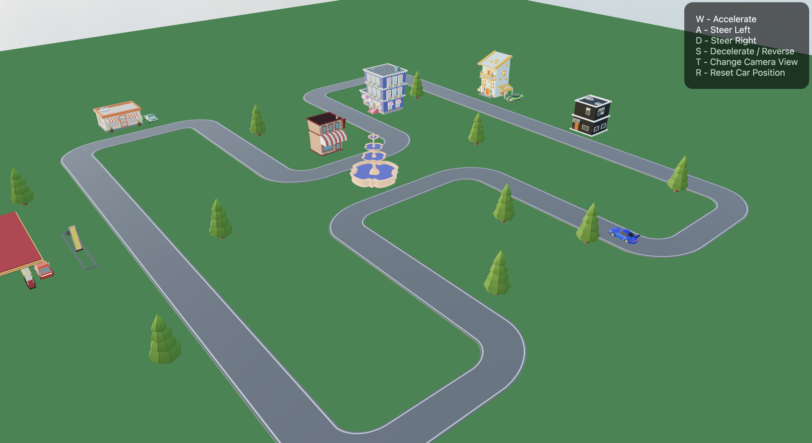

IBM Internship

Over the summer, I had a Full Stack Software Engineer Internship at IBM.
During this internship, I developed an internal dashboard and API to collect data about the usage of different filters in my teams product.
I used the MERN stack along side the IBM Carbon Design System.
Unfortunately I cannot provide pictures because it is an internal tool.
Portfolio Page

My personal portfolio project was made two summers ago to aid in finding an internship.
I developed it using the MERN stack.
It is a full stack project and dynamically add things like skills and projects
Driving Game

This was my final project for CISC 298 - Creative Coding.
It is a simple driving simulator using React and Three.js